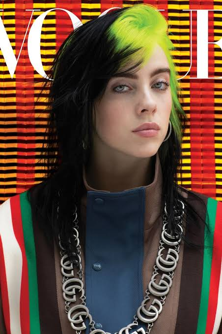

Artistas,géneros y canciones
Canciones populares
Las canciones populares son aquellas que son conocidas y escuchadas por muchas personas. Pueden pertenecer a géneros como pop, rock, reggaetón, rap o electrónica. Actualmente, las redes sociales y plataformas como TikTok, YouTube y Spotify ayudan a que una canción se vuelva famosa rápidamente. Algunas canciones incluso se convierten en clásicos y siguen siendo escuchadas durante muchos años.
Curiosidades musicales
La música tiene muchas curiosidades. Algunas canciones famosas fueron creadas en muy poco tiempo, mientras que otras tardaron meses en producirse. También hay canciones que se hicieron populares años después de su lanzamiento gracias a películas, series o redes sociales. Además, la música puede provocar emociones y hacernos recordar momentos, personas o lugares importantes.
Colores que identifican a los artistas
Sabrina Carpenter:
Se relaciona principalmente con celeste, rosa, blanco y amarillo. Estos colores aparecen en sus vestuarios, escenarios y diseños, y reflejan una estética pop, divertida y brillante. En sus presentaciones también utiliza elementos inspirados en estilos retro y glamorosos.

Billie Eilish:
Uno de sus colores más reconocibles es el verde neón, especialmente durante la etapa de When We All Fall Asleep, Where Do We Go?. También utiliza mucho negro, azul y plateado en distintas etapas de su carrera. También ha utilizado azul, marrón, plateado y negro en diferentes momentos. Sus cambios de colores suelen acompañar los cambios de estilo y la personalidad visual de cada etapa de su música.

Olivia Rodrigo:
Sus colores más asociados son violeta, lila, azul, rosa y rojo. En especial, el violeta y el lila fueron importantes durante la estética de SOUR, mientras que GUTS presentó otros tonos y estilos.Los colores que utiliza suelen relacionarse con emociones como la nostalgia, el amor, la tristeza, la frustración y el crecimiento personal.
Bruno Mars:
Su estética suele incluir rojo, dorado, negro, blanco y marrón. Estos colores combinan con su estilo retro y vintage, inspirado en diferentes décadas de la música,especialmente en los años 70 y 80. Sus trajes elegantes, luces de escenario y elementos brillantes forman parte de una imagen muy característica. Los colores ayudan a transmitir energía, elegancia y diversión, elementos que también están presentes en muchas de sus canciones y presentaciones.